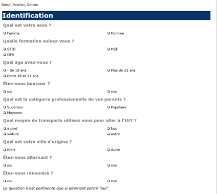
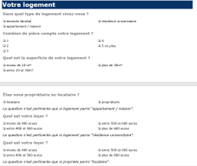
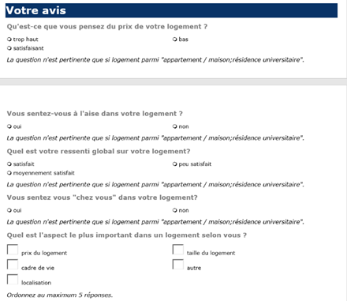

Making a survey
This project involved building a questionnaire in Sphinx for a survey on student housing at the University of Niort (FRANCE). Using data and charts, we had to think about the most useful questions to ask in a survey covering student housing at the university. The questionnaire was split into several parts: identifying the respondent, their current housing situation, and then their opinion on student housing. Before building the questionnaire in Sphinx, we created a flowchart to check how and in what order the questions would be asked, and depending on the answers, how to properly direct the respondent to the next question.
Skills learned:
- Using Sphinx
- Designing a survey questionnaire
- Improving my writing skills
Illustrations



Overview of the survey